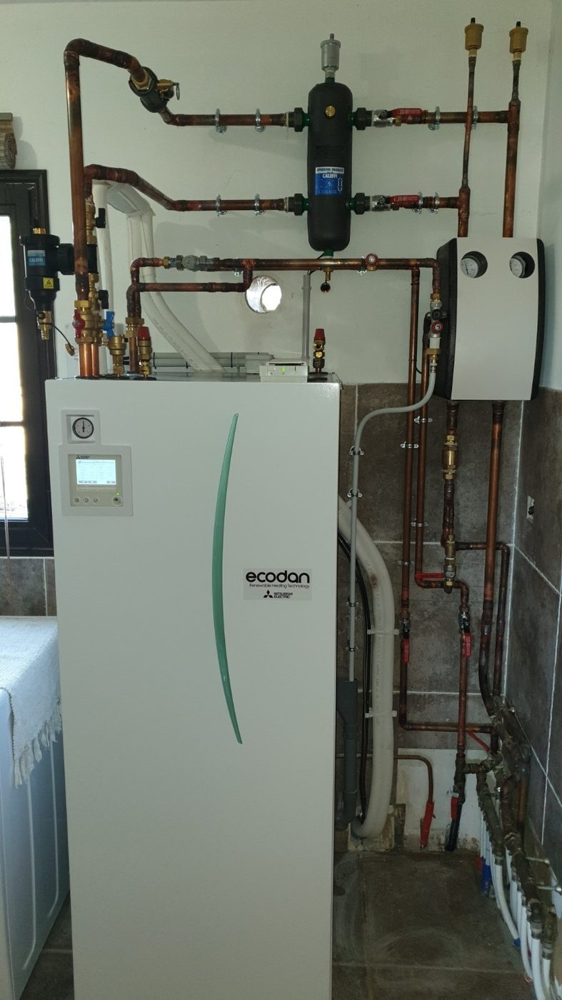
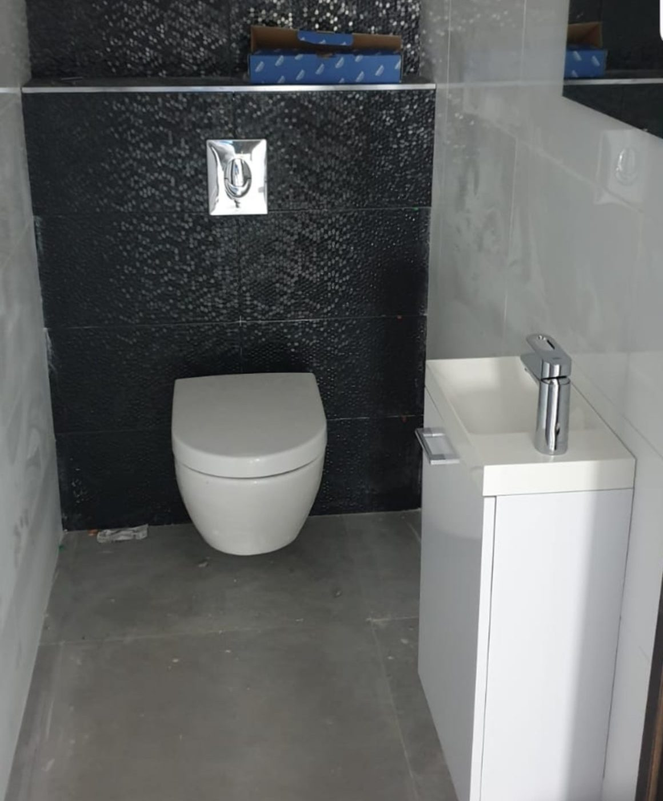
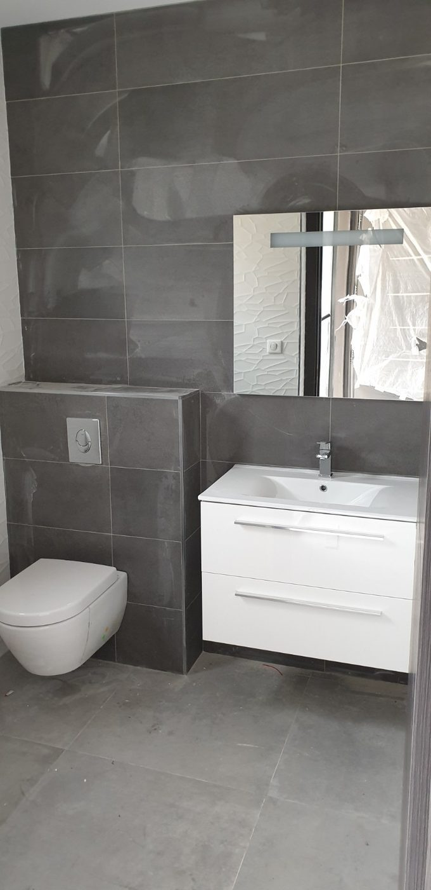
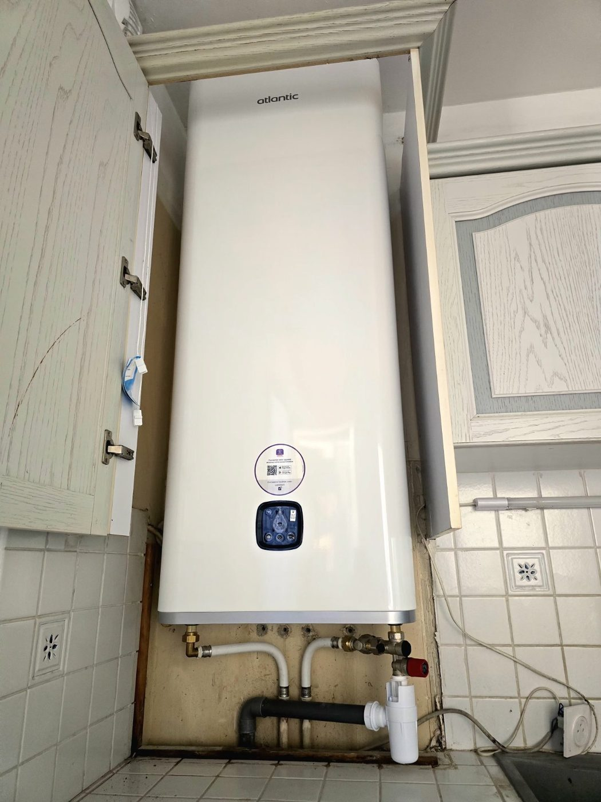
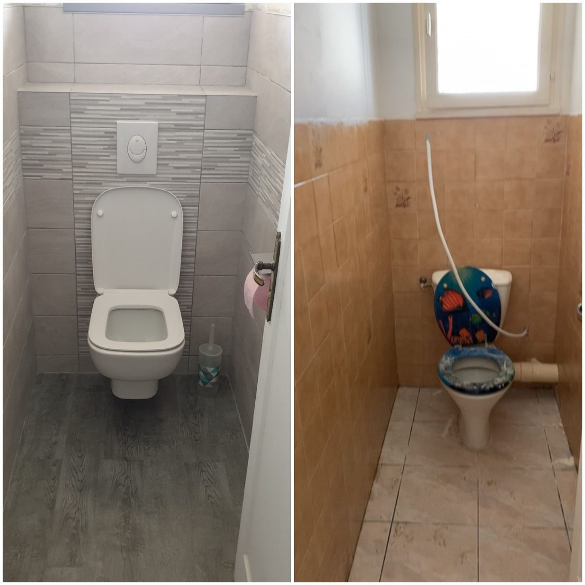
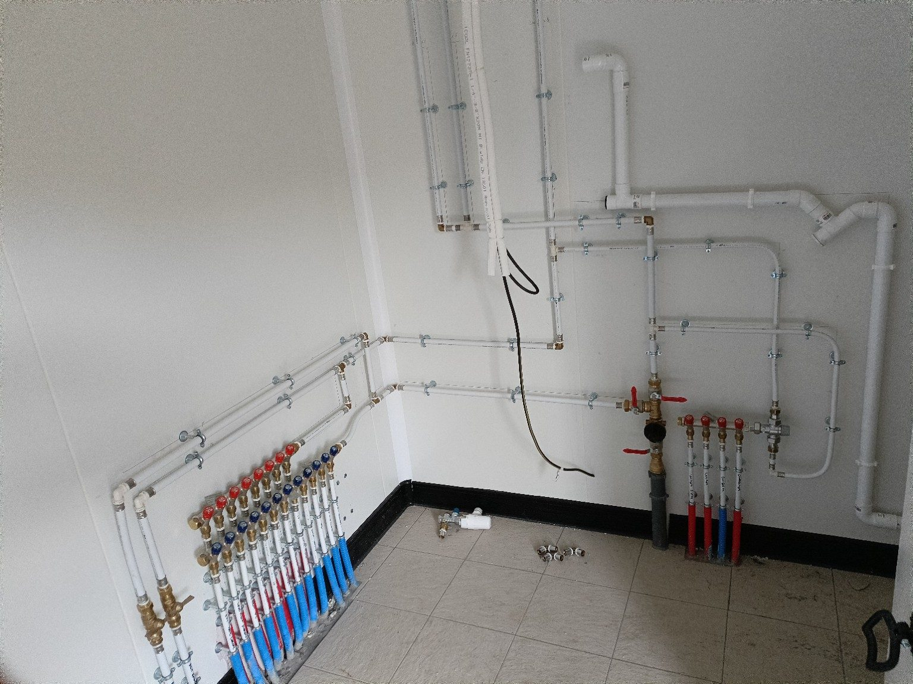

Remplacement chauffe-eau
Dépose ancien ballon, pose du nouveau chauffe-eau, groupe de sécurité, raccordements et contrôle d’étanchéité.
Réalisations CC-2A
Chauffe-eau, sanitaires, douches, WC, nourrices, distributions eau froide/eau chaude, évacuations et rénovations plomberie : une sélection de chantiers réalisés ou raccordés par CC-2A.
Domaines d’intervention
Les photos montrent les travaux les plus utiles à valoriser : installation neuve, rénovation plomberie, remplacement chauffe-eau, reprise réseau, sanitaires et locaux techniques.
Dépose ancien ballon, pose du nouveau chauffe-eau, groupe de sécurité, raccordements et contrôle d’étanchéité.
Pose ou raccordement de douche, meuble vasque, WC, robinetterie, siphon et évacuation.
Création ou reprise de réseaux eau froide / eau chaude en apparent ou selon configuration chantier.
Modification de réseaux, raccordements sanitaires, évacuations et préparation de pièces d’eau.
Galerie photos
Une galerie courte, volontairement sélective, pour montrer la qualité des raccordements et la diversité des interventions.










Photos de chantier : certaines installations peuvent être en cours de pose ou avant finition complète.